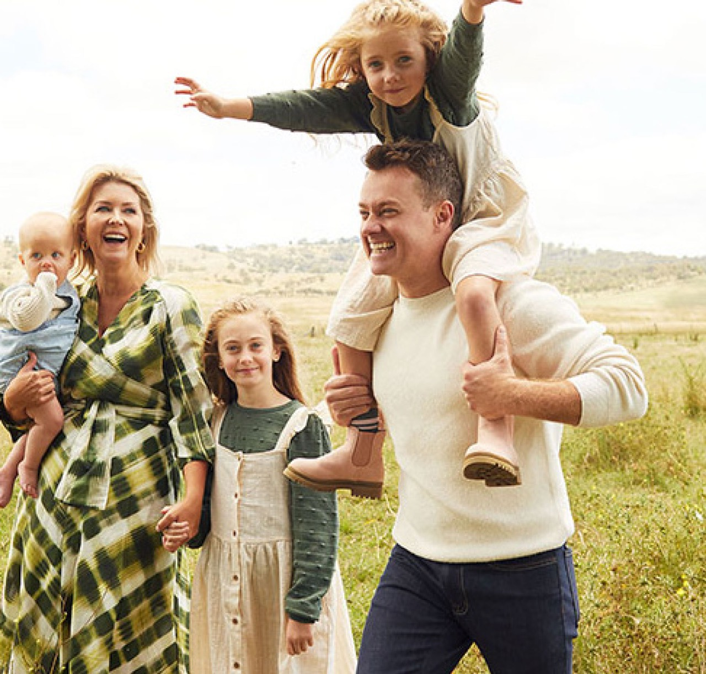
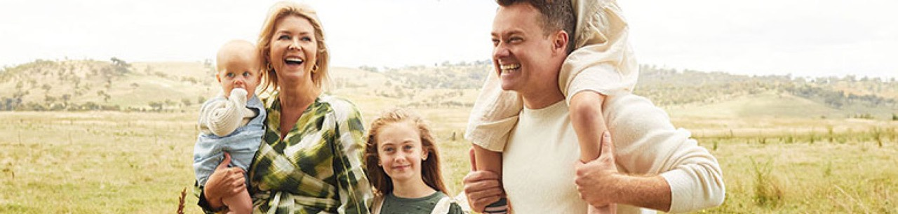

A vibrant force of nature — award-winning television producer, radio host, writer, qualified spiritual medium and proud mum to three daughters.

Chezzi Denyer is an award-winning television producer, radio host, writer, qualified spiritual medium, and proud mum to three daughters: Sailor, Scout, and Sunday. Known for her warmth, honesty, and irrepressible spark, Chezzi's journey is as multifaceted as it is inspiring.
Born Cheryl, she never quite felt the name suited her. It wasn't until her time working at Sunrise that the nickname "Chezzi" — gifted by the Line Producer — stuck, perfectly capturing her bubbly energy and bright spirit.

Today, Chezzi lives on a 28-acre farm just outside Bathurst, NSW, with her husband, Grant Denyer, and their girls — surrounded by muddy boots, paddock chats, hairy cows, and a little bit of everyday magic.

Chezzi's media career began at just 15, working at a local radio station before studying a double degree in Broadcast Journalism and Theatre/Media at Charles Sturt University. She cut her teeth in television at Prime News in Orange, delivering the updates as a sometimes-awkward but determined young journalist.
Her passion for storytelling led her to NSW Parliament House, where she worked as a Media and Policy Adviser across high-impact portfolios including Planning and Corrective Services. But television was calling. Chezzi returned to media as Assistant Chief of Staff in Channel Seven's Martin Place newsroom, before being headhunted by Sunrise.
At Sunrise, Chezzi excelled in multiple roles — Segment Producer, Field Producer, Weather Producer, Soapbox Manager, and even creator of the original Sunrise website, which she ran for nearly a year to give fans unprecedented behind-the-scenes access. Her down-to-earth charisma made her a fan favourite, while her ability to put talent at ease established her as one of Australia's top talent producers.
She has contributed to some of the country's most iconic television programs, including Today Tonight and Seven's 50 Years of Television special, where she worked the red carpet interviewing Australia's best-known stars. She's also worn many other hats — National Park Ranger, Marketing Manager for Holden, and even Australia's first "Endomologist" at Fernwood gyms — proof of her insatiable curiosity and endless adaptability.

Alongside her television work, Chezzi was also the co-host of the hugely popular and award-winning podcast It's All True? — which ran for 11 successful series. Together with her husband Grant Denyer and co-host George Sargent from Triple M, the podcast explored personal stories, behind-the-scenes moments, and candid conversations that deeply resonated with listeners around the country.

In recent years, Chezzi has embarked on a profound spiritual path. After the heartbreaking loss of her dear friend Amy Gullifer in 2022, she felt called to explore the spirit world more deeply. She enrolled in The Medium School in Canada and became a Certified Medium in early 2024, graduating with honours after rigorous assessments in both individual and group readings.
Later that year, she was invited to Arthur Findlay College in the UK, where she trained under renowned psychic Tony Stockwell — an experience she describes as life-changing.
Now a working medium, intuitive guide, and founder of the spiritually infused Love Lello brand, Chezzi is passionate about helping others reconnect with their intuition and awaken the inner psychic she believes we all possess. Her work is deeply rooted in compassion, healing, and truth.
Chezzi is a powerful mental health advocate, openly sharing her lived experience with ADHD, PTSD, and postnatal anxiety. She has partnered with organisations like PANDA to support new mums, has served as an ambassador for Jeans for Genes Day, and frequently collaborates with skincare and wellness brands — bringing her signature warmth and honesty to every partnership.

A gifted writer, Chezzi has released her debut book — The Weird Little Girl Who Talked to Ghosts — a deeply personal memoir exploring her spiritual awakening, mediumship journey, and rediscovery of her true self. Told with raw honesty, humour, and spiritual insight, the book is a powerful account of transformation, healing, and embracing one's soul purpose.
She is also continuing her education, currently studying Soul Life Psychology at the Toni Reilly Institute, with plans to complete her doctorate in the coming year.





Media enquiries, speaking bookings and brand collaborations all go through the same inbox.
media@grantdenyer.com.au